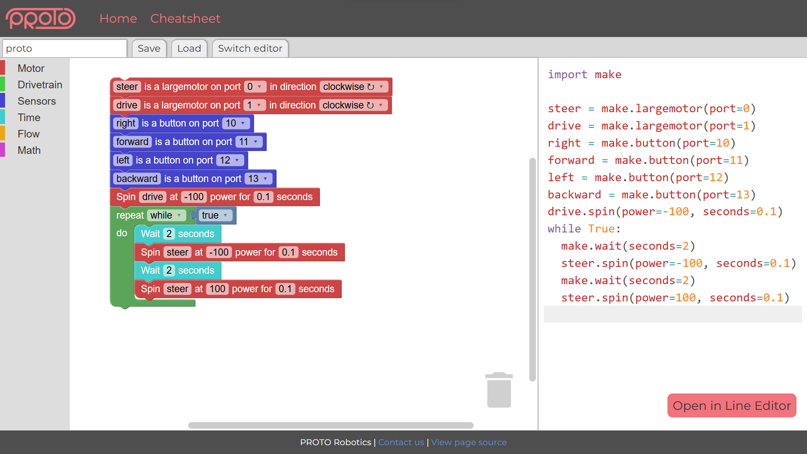
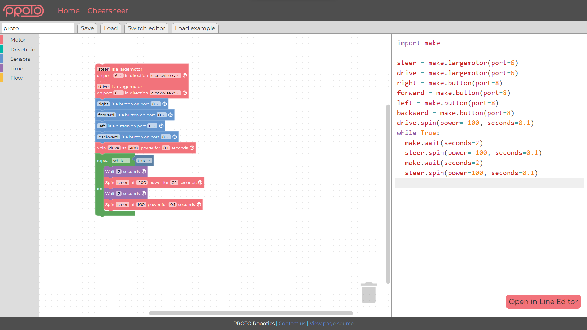

Overview
PROTO is a modular robotics learning ecosystem built around classroom-ready hardware, curriculum, and a coding environment. The goal is to give students an approachable first build while still leaving room for deeper work with mechanisms, gearing, sensors, and structured engineering challenges.
PROTO Robotics Web IDE is the software side of that ecosystem: the main browser workspace students use to program the kit. My work focused on a high-value transition point: helping students move from visual block programming into readable line code while preserving guidance, feedback, and project state.
One of my major contributions was the block generator I wrote called Jenga, which builds Blockly toolboxes and physical block definitions from structured JSON data. It lets richer inputs, generated block shapes, shadow blocks, inline layout controls, and editor metadata come from one source instead of being redefined across multiple files and workflows.
Where the IDE Fits
- PROTO combines hardware, curriculum, and software for classroom and after-school robotics programs.
- The coding environment connects the physical kit to the learning path, so students can move from building to testing robot behavior quickly.
- The IDE has to support both beginner-friendly block programming and a path toward text-based development as students grow.
Contribution Trail
- 16 commits in the IDE repo and 2 commits in the block generator library repo as TheAngryGhost.
- 5 IDE commits currently visible on the dev branch.
- Original fork work later moved into the PROTO Robotics organization repo.
Notable Engineering Work

PROTO Block Coding IDE
The block coder is the visual programming side of the IDE: students drag Blockly blocks into a workspace, generate readable code from that logic, and keep their work in a format that can move between visual and text-based editing.
The open-in-line-editor flow helps students move from drag-and-drop Blockly logic into readable code, turning the IDE into a learning bridge rather than two disconnected editors.
Friendly IDE for Students
The editor experience is designed for students moving from visual programming into real code, with readable feedback, smoother controls, and guidance that keeps the environment approachable without hiding the underlying programming model.
Line Editor Workflow
- Added the line coder as a text-based path through the IDE.
- Built the button flow for opening generated block code in the line editor.
- Used markdown parsing so autocomplete and function help could show richer documentation.
Block Generator
The block generator, called Jenga, turns structured JSON block definitions into Blockly blocks, toolbox entries, generated-code behavior, editor metadata, and UI details. I originally built it in my fork of the IDE, then it was copied into the main PROTO Robotics site and later cleaned up and merged into the organization codebase.
- JSON definitions: Generated Blockly blocks and toolbox structure from shared block data.
- Block metadata: Added per-block autocomplete data so editor suggestions came from the same source as the blocks.
- Custom fields: Added support for servo blocks, held-button checks, wait-while blocks, color fields, and grid dropdowns.
- Workspace polish: Added save/load support, grid snap behavior, rotation symbols, and renderer customization hooks.
- Production handoff: The work moved from my fork into the PROTO Robotics organization repo, where it was cleaned up and merged into the shared codebase.
Editor Reliability
- Custom linter: Wired syntax verification results into CodeMirror diagnostics.
- Editor polish: Fixed focus stealing, right-click context menu behavior, and autocomplete positioning.
- Block rendering: Fixed drivetrain clockwise and counter-clockwise icon rendering.
In the Dev Branch
The dev branch includes additional work that has not landed on main yet. The strongest upcoming piece is a Blockly helper refactor that pulls workspace creation, mounting, resizing, serialization, code generation, change listeners, and cleanup into a reusable helper module.
That refactor reduces coupling in the block editor and gives the team a cleaner place to handle Blockly behavior like parent containers, resize observers, generated Python output, and saved workspace state. The dev branch also includes custom renderer work that procedurally generates SVG graphics on the fly for PROTO-specific block shapes and visual styling.
- Created blocklyHelper for reusable Blockly workspace setup and lifecycle management.
- Renamed helper functions to avoid conflicts between CodeMirror and Blockly helper imports.
- Fixed drivetrain clockwise/counter-clockwise icon rendering for Blockly blocks.
- Added a custom Blockly renderer that procedurally generates SVG graphics for PROTO-specific connection shapes and block styling.
- Expanded block data and added a help icon path for richer block definitions.

Why This Matters
- The IDE sits at a real learning handoff, so changes have to respect both user experience and the underlying programming model instead of only solving the visible UI problem.
- Shared block definitions reduce duplicate logic across Blockly, generated code, autocomplete, and help text, which is the kind of structure that matters when a team has to keep adding features over time.
- Editor polish matters because small bugs in focus, autocomplete, diagnostics, or rendering can slow down every user and create support work for the rest of the team.
- The dev branch refactor points toward larger-project habits: reusable setup code, clearer ownership boundaries, and fewer editor views carrying their own slightly different Blockly lifecycle.